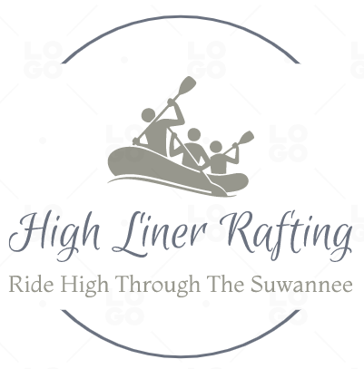

Overview
Purpose
This sight will help High Liner Rafting customers get infromation about our rental prices and trips for rafting.
Audience
Our company High Liner Rafting provides a second to none rafting experience down Florida's Suwannee River. As you raft enjoy the beautiful ride with the whole family and experience an exhilarating time. As you ride observe the alluring limestone banks shroud with shroud cypress, red maple, planertree, river birch, and tupelo trees. We hope are service gives you memories that that you will never forget.
Branding
Website Logo
Style Guide
Color Palette
Palette URL:
https://coolors.co/130303-2d080a-7c3626-ff5733-a8a8a8| Primary | Secondary | Accent 1 | Accent 2 |
|---|---|---|---|
| [#FF5733] | [#a8a8a8] | [#7c3626] |
Typography
Heading Font: [Sans-serif]
Paragraph Font: [Monospace, "Monaco"]
Normal paragraph example
High Liner Rafting offers a top notch expiernce on Florida's Suwannee River. Since 1987, our local family buisness has been providing Floridians exhilarating rides on the Suwannee River.
Colored paragraph example
Trips are organized by mild for families, to great which are exclusively for rafters who physically fit and experienced. We have 6, 8, 10, and 12 man rafts available for rent. Rates go from smallest to largest: 50.00$, 60.00$, 70.00$, 80.00$. Whether you are rafting for fun or to challenge yourself, at High Liner Rafting we have exactly what you need
Navigation
Site Map
Wireframes
Home